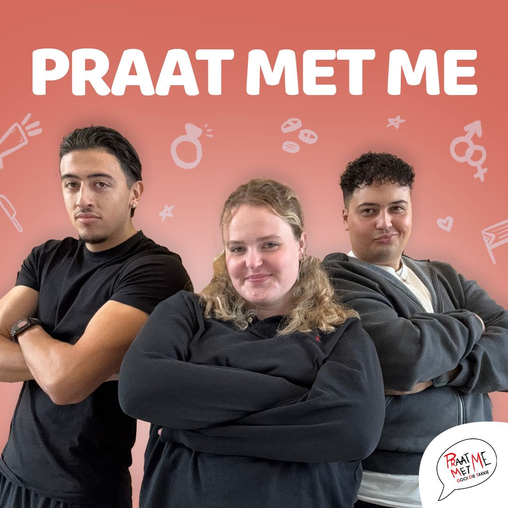

S1E06 "Hij ging er vandoor met mijn beste vriendin omdat..."
Voor veel mensen is het een van de grootste nachtmerries: een mix van bedrog, verraad en het gevoel dat de twee mensen die het dichtst bij je stonden, je volledig hebben laten vallen. In deze aflevering bespreken we wat je kunt doen als je niet alleen je partner verliest, maar ook je beste vriendin? Hoe kun je omgaan met de gevoelens van verraad en verlies, en op welke manier herstel je je leven? Verwacht de rauwe, ongefilterde verhalen en ontdek op welke manier deze situaties mensen hebben beïnvloed en gevormd. Een aflevering boordevol emoties, waarin liefde, vriendschap en verraad centraal staan. Durf jij te luisteren?
Luister naar onze podcast op alle podcast streamingplatforms.
PraatMetMe de podcast
Voor alle zakelijke vragen kun je mailen naar:
praatmetmebusiness@gmail.comVolg onze socials
Andere Afleveringen
-

S1E05
"Op mijn 15e was ik bijna overtuigd om in mijn eigen huis te beroven"| PraatMetMe featuring Specs Gonzalez -
S1E04
"IK BEN EINDELIJK GESTOPT MET COKE, MAAR IK VOEL ME NIET BETER!" -
S1E03
"Ik heb een leugen over mijn vriendin verspreid om mijn eigen imago te redden.. -
S1E02
"Mijn nicht ging vreemd met een aangetrouwde oom..." -
S1E01
"Ik heb op dat feest met de beste vriend van mijn ex gezoend..." -
Teaser
Nieuwsgierig? Wil je weten of deze podcast iets voor jou is? Dan is hier vast een intro voor je.